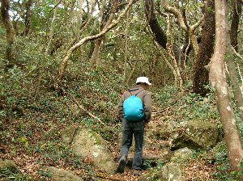
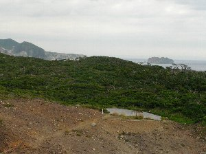

式根島で温泉三昧 | 2005年11月 |
|---|---|
| 常日頃、人が少ない所を目指している「しふとべる」は、離島に憧れる人も多い。今回は伊豆七島の一つ、式根島で温泉に浸かりながら星を見よう！ と、言うことで、有給の取れる金曜発、二泊三日組（キッカー、いづみ、べっしーの三名）、と通常土日休みの土曜発、一泊二日組（四名）に分かれる事になった。私（べっしー）は、この日の為に、他に有給を取らず金曜発組。 式根島は、下田から40ｋm南東に位置し、面積3.9ｋ㎡ 島の周囲12km 人口約580人 と大変小さく、島の東側に人が住んでいて、西側は断崖絶壁のため、森に覆われている。 金曜の朝、AM4:10に迎えが来ると言うことで、AM3:50起床！ さすがに眠い・・・・下田発の船はAM9:10だが、こんなに早く行くものなのか・・・・ バイパスを通り、一路下田へ。下田にはAM6:45着。 天気は曇り。下田発の神新汽船は、思ったより小型の船で、只今燃料高騰の為、片道3,850円ナリ（通常3,600円）、本日の航路は 下田AM9:10→利島→新島→式根島AM12:30 となっており、3時間ちょっとの船旅。 海はそれほど荒れていないけど、船はそこそこ揺れます。 | |
 コレがフェリー |  ゴマサバです！ |
| 定刻通り式根島に到着。今回お世話になる民宿「千代屋」さんに、お迎えに来て頂きました。 その後、「レストラン大師」にて昼食。キッカーが、トビウオの焼き魚定食を食べる。因みに、ココの店主の最初の言葉が「この魚なんですか？」の問いに「・・・・とびうお・・・・」の一言だった。（笑）（「いらっしゃいませ」無かったね） 午後は釣りをする事になり、釣り道具屋さんで、仕掛けや餌を購入。（竿は持って行ったので） 仕掛けはサビキ。店主曰く「クーラーボックスに入りきらない位、バンバン釣れるよ」。 そうは言われても、まともな物が釣れたことの無い私としては、半信半疑で糸を垂らすと・・・・・１分くらいで、ググッ！ と強い引き！ 20cm位のゴマサバを釣り上げました！！ おお〜〜、すごい！ キッカーも続けて釣り上げ、サバが要らないくらいに釣れました。持ち帰っても、どうしようもないので、一匹づつ持ち帰ることにして、後はリリース。サバは引きが強くて、楽しめたけどね。 ああ、キッカーが熱帯魚のような、黄色の縞々な魚を釣ったけど、これもリリース。 夕闇迫る頃、今回の旅の目的、露天風呂に行く。式根島には3箇所の露天風呂があり、どれもが海中温泉のため海辺に面している。水着着用の混浴露天だが、その分みんなで入れるし、周囲の囲いも無いため、景色は抜群！ しかもタダ！ この日は足付温泉へ行ってみる。更衣室、水シャワー完備。地元のジイちゃん、バアちゃん達も、ちゃんと水着を着て入っていました。喋っている言葉は、意味不明！ 温泉は、硫化硫黄のために、お湯は黄土色に濁っていて、白いタオルを茶色に染めそうです。はぁ〜気持ちいい〜 宿に帰り、釣ったサバを調理して貰って、本日の夕食です。魚料理が一杯で、満足満足！ サバは味噌煮込み風（料理に詳しくない為、詳しくは不明）になっていました。一部料理が冷めているけど、美味しいです。 味噌汁の島ノリは最高だな〜 夜、まだ8時過ぎだというのに、キッカーは既に寝入ってしまい、仕方なく酒を買いに外に出てみると、すべての商店はしまっていて、寂しい限り・・・・ビールの自販機も無く、ジュースを買って帰り、暇すぎて（いづみさんも、隣の部屋で寝ているようで、静かです）10時消灯。 | |
 ココが足付温泉 おや、地元の人かな？ |  島の西側ハイキングルート |
| 夜中12時過ぎ、ふと目が覚めると、雨がザンザン降り！ 風も強く、まるで台風のようです。すごいな〜と思いながらも、再び眠りの世界へ。 朝、目覚めると雨はやんでいて、薄っすらと日が差し込んでいたりします。朝食を食べている最中に、女将さんが「今日は船が欠航なので、他の人来れないね〜」って。えっ、欠航？ 雨はやんでるけど、風が強いって事かな〜〜 これにて、土曜組みの4人は、式根島断念とあいなってしまいました。 残念！ 明日はキッカーの誕生日だった為、土曜組みの一人がケーキまで買ってくれていたのに・・・・ さて、気を取り直し、本日の行動を。雨は降っていないし、時折日が差す天気なので、お弁当を買って島一周の旅に出かける事に。まずは、岩の谷間に有る、地鉈（ジナタ）温泉へ。ここは、両側を切り立った岩場に挟まれ、長い階段を下りて行き、海岸手前の岩場に温泉が湧き出ている。見るからにボコボコと熱そうな泡が噴出している様を見ると、入る気はしない。どうも、潮の満ち引きで、湯温が違うらしい。 仕方なく、また後で来ることにして、我々は島の西側、人の住んでいない森の中に、足を踏み入れた。木々は低木で、ねじれる様に生えている。南国を思わせる。遊歩道の所々にある展望台から眺めると、海岸から切り立った崖で囲まれていることが分かる。一番西に位置する唐人城の、多目的デッキで昼食とする。この森の中に突如現れる、木製の広いデッキ。なぜ、こんな所に作ったのであろう？ このデッキより西側には草木が生えておらず、不思議な光景を作り出している。ここら辺から、神津島や伊豆半島が見える。 なんだ、曇っているけど天気良いじゃん！ 海も荒れていないし。 島を時計回りに、遊歩道に沿って歩き、島の北側へ。カンビキ展望台から見下ろす海岸は、透き通ったブルー。とても美しい。遠くに、大島や利島、新島が見える。新島は以外に近く、カヌーでも行けそうだ。 | |
|  唐人津城 緑との境目に多目的デッキが |  島の西側 右上遠くに下田が見えます |
| 夕方4時ごろ、再び地鉈温泉へ挑戦。今回は先客が居て、温度が良いらしい。と言うか、先ほどボコボコしていた湯溜まりは、相変わらず熱そうで、その横の湯溜りに入っている。何か浮いているので躊躇していたが、覚悟を決めて入った。 入ると暖かく、とても気持ちがいい。先客のジイさんは、もう35年も毎日入っているらしい。浮かんでいたのは藻ではなく、湯の花とか。しかし、ココは掛け流しの湯、ならぬ 湧き出しの湯だな〜 そのままだし。 海水が入ってくるけど・・・・ さて、温まったら、今度は昨日の足付温泉へ。体に悪いと思いつつ、途中でビールを購入。 ちょうど月が綺麗に出てきたので、月見酒をやりながら温泉！ なんて贅沢なんでしょう〜 こちらは、掛け流しの湯の量を、自分で調節出来るので、適温にしながら、ゆっくりと入浴。波の音が心地よい。 この日の夕食にも、昨日釣ったサバが出てきた。あの量で一匹だったのか・・・・ 今日は甘酢あんかけ（？）風。これまた美味しい〜♪ 本日は夕食後、三人でお酒などをチビリ。 あー、本当ならココにキッカーの誕生日ケーキが有ったのね。等と考えて、、本日も10時過ぎに、早々と就寝！ 翌朝は天気が良さそうだったので、一人早く起きて日の出を見に行くことに。キッカーが爆睡している横をすり抜け、東海岸の「ぐんじ山展望台」まで。 朝の空気は気持ちよく、断崖絶壁の上に立つ展望台は、景色も抜群！ 天気も最高！ デジカメで写真を撮っていると、突如電池切れ！！（いや、残量確認していないのが悪いんだけど） あ〜、前回の東京モーターショウから充電してなかったや。 仕方なく、美しい景色は、自分の記憶に留める事に。この後も、海岸を散歩したりして、綺麗な景色があったのですが、写真ナシ！！ 残念！ | |
 地鉈温泉へのアプローチ |  地鉈温泉 |
| 最終日は、三人で島の東側から北側を散策。相変わらず、人や車が少ない。 島の北に位置する、泊海岸はとても美しい入江になっていて、海はマリンブルー、白い砂浜が（狭いけど）眩しい。あー、ココで泳いだら気持ち良いだろうな〜 気温も高いので泳げるな〜 水着持ってくれば良かったかな〜 これにて式根島は終了〜12:50発の船で、帰りました。 さて、式根島は終了ですが、帰りの船のコースは、式根島→神津島→下田 なので、船上から神津島を眺めることが出来ました。 神津島は式根島と違って、高い山で構成されています。斜度がきつく、東海岸は岩肌が露出し、崩れている箇所さえあり、荒々しい光景です。船は南側の多幸湾へ着きましたが、エメラルドグリーンの海岸と、グランドキャニオンを彷彿させる断崖が、日本の景色では無い様に思われます。いつか、ココで泳ぎたい！ 半日で来られるなら、ココも良いな！ そんな、新たな旅の予感がしました。みんなで、いつか行こう！ | |
| コメント＆写真 ｂｙ べっしー | |